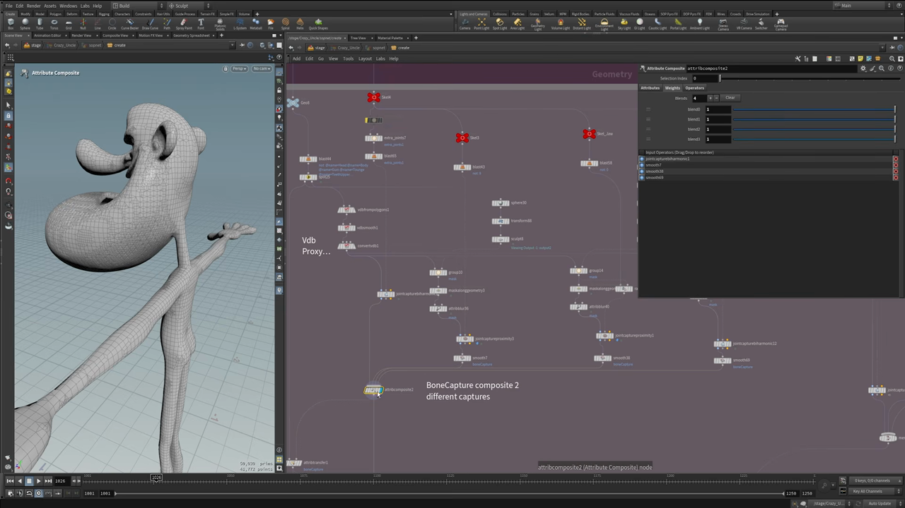
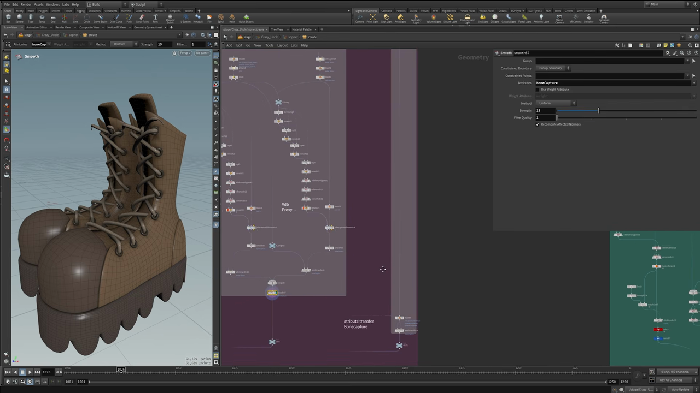
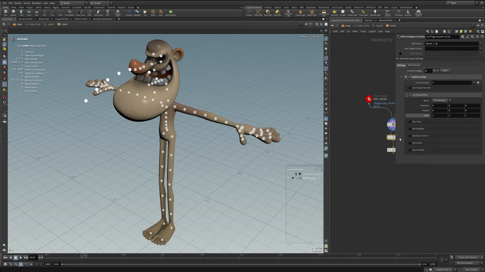

Houdini キャラクター制作 6 — ウェイトを塗らずに済ませる KineFX スキニング
出典: Character Creation 6 | KineFX Procedural Skinning （SideFX 公式チュートリアル Create a Procedural Character の第6回 / 講師 Roy Kristoffersen さん / Houdini 21 / 16:55 / 英語）。 このページは、上記の動画を見ながら自分用にまとめた日本語の学習メモです。SideFX 公式の翻訳ではありません。 シリーズ全体は第0回にまとめています。
この回で扱うこと
副題が「hopefully never paint a weight again（もう二度とウェイトを塗らずに済みますように）」です。 ウェイトペイントの代わりに、マスクで範囲を区切ったキャプチャを何枚も重ねるという進め方をします。
Joint Capture Biharmonic/Joint Capture Proximity/Capture Packed Geometryの使い分けAttribute Compositeでスキニングをレイヤーとして重ねる- プロキシメッシュを作ってからスキニングを転送する考え方
Attribute Transferによる仕上げ
1. 下ごしらえ
- 組み上がったモデルとスケルトンの両方に
Time Shiftを入れます。 タイムラインを動かすたびに再計算されるのを防ぐためです - スケルトン側は
Transformと、首のところだけEditを入れています - 使うのは bind skeleton だけです。ジオメトリ側のスケルトンにはスキニングに使わない 余分なボーンが含まれているためです
2. キャプチャの3つの使い分け
| ノード | 使いどころ |
|---|---|
Capture Packed Geometry | 目のように丸ごと1つのジョイントに固定したいもの。キャプチャしたいジオメトリとジョイントをつなぐだけです |
Joint Capture Biharmonic | 体のようになめらかに変形してほしいところ |
Joint Capture Proximity | 距離ベース。あごや歯など、近いジョイントに素直に付けたいところ |
体の下地
Blastで体だけを取り出しますVDB from Polygons→VDB Smooth→Convert VDBでひとつながりのメッシュにしますJoint Capture Biharmonicをかけます
これが土台になります。ただしこのままだと、頭やあごの境目などがうまくいきません。 そこから先が本題です。
3. Attribute Composite でスキニングを重ねる

ネットワークには 「BoneCapture composite 2 different captures」という付箋が貼ってありました。 これがこの回の中心の考え方です。
やっていること
- 効かせたい範囲のジオメトリ（頭・あご・鼻など）を用意します
Mask Along GeometryとAttribute Blurでマスクを作ります- そのマスクの範囲だけを、狙ったジョイントにキャプチャします
SmoothでboneCaptureをならしますAttribute Compositeに入れて、土台のキャプチャに重ねます
Attribute Composite の設定
ここは設定を間違えると効きません。動画でも丁寧に説明されていました。
| 項目 | 設定 |
|---|---|
| Attributes | Points の boneCapture を指定します |
| Blends | 入力の数だけ必要です。上の画像では入力が4つなので Blends = 4 |
| blend0〜blend3 | すべて 1 に設定します |
| Alpha Attribute | mask を指定します |
Alpha Attribute にマスクを指定することで、 そのマスクが立っているところだけが、土台のスキニングの上に上書きされます。 レイヤーとして積み上がっていくイメージです。
部位ごとの実例
| 部位 | 作り方 |
|---|---|
| 頭 | 頭のジオメトリから Mask Along Geometry + Attribute Blur。マスクが立っている範囲を首のジョイントへキャプチャ |
| あご | Sphere → Transform → Sculpt → Subdivide → Sculpt で範囲を作り、Mask Along Geometry → Attribute Blur → Joint Capture Proximity → Smooth |
| 鼻 | Transform + Sculpt で範囲を作り、Mask Along Geometry → Attribute Blur → Joint Capture Biharmonic。鼻はなめらかにしたいので Biharmonic |
あごの範囲を球とスカルプトで作っているのが面白いところでした。 ウェイトを塗る代わりに、「ここからここまで」をジオメトリの形で定義しています。 これなら形をあとから何度でも調整できます。
4. プロキシから本体へ転送する
ここまでの作業は VDB を通したプロキシメッシュの上で行われています。
最後に Attribute Transfer で boneCapture を実際のジオメトリに移します。
そのあと Smooth をかけ、Clip を通します。
Clip を入れているのは、足が靴からはみ出さないようにするためだそうです。
5. 密度が高すぎるもののスキニング
ヒゲ・髪・歯・靴のように、そのままではキャプチャしにくいものは いったん単純なプロキシを作って、そこでスキニングしてから転送します。
Shrinkwrap → Remesh → Ray → Remesh → VDB from Polygons → VDB Smooth
→ Convert VDB → Remesh → Joint Capture Proximity → Attribute Transfer| 対象 | やっていること |
|---|---|
| ヒゲ・帽子 | 上のプロキシを作り、先に体でスキニングしたものから転送。さらにそれをヒゲ本体へもう一段転送しています |
| 髪 | 同じ流れ |
| 歯 | Shrinkwrap → Remesh → Joint Capture Proximity → 元のジオメトリへ転送 |
| ストロー | 元のジオメトリが密すぎて先端がうまく付かないため、Rig Doctor → Resample → Sweep でキャプチャ用の単純なジオメトリを作り、そこでスキニングしてから転送 |
| 服 | Blast で服だけにして、体から Attribute Transfer でスキニングを飛ばすだけ |
ヒゲの場合は2段階の転送になっているのがポイントです。 こうしておくと、あごが開いたときにヒゲが元のメッシュとまったく同じ動きをします。
靴でつまずいた話

靴も同じくプロキシ方式なのですが、講師の方が実際につまずいた点が共有されていました。
最初は両方の靴をまとめて Shrinkwrap にかけていたが、
左右が近すぎて片方の靴のスキニングがもう片方に漏れてしまった。
そのため左右を分けて処理することにした。
分けたあとは、それぞれのプロキシから Attribute Transfer で boneCapture を転送し、
Merge してから Smooth を弱めにかけています。
上の画像の Smooth は Attributes が boneCapture、Strength が 15 でした。
6. スキニングの確認

最後に、スキニングがちゃんと効いているかを確認する仕組みが紹介されていました。
- 動画で「pack character node」と呼ばれていた新しいノードで、 シェイプ・スケルトン・リグをまとめて1つのノードに詰めます
APEX Configure Controlsを通します。 スケルトンのスケールを小さくしたい場合などに使いますが、今回は特に変更なしとのことでした- Scene Animate で、実際にポーズを付けてスキニングを確かめます
上の画像がその状態で、キャラクターの上にコントロールポイントが並んでいます。 この場でアニメーションを付けて、破綻がないかその場で確認できます。
確認したい部位を変えたいときは Object Merge の参照先を差し替えるだけ、
という使い方をしていました。髪などジオメトリが重いところは動作が少し重くなるものの、
問題なく確認できていました。
この回のまとめ
- ウェイトを塗る代わりに、マスクで区切ったキャプチャを
Attribute Compositeで重ねます Attribute Compositeは Blends を入力の数だけ用意し、すべて 1、Alpha Attribute にmaskを指定します- マスクの範囲は球やスカルプトで作れるので、あとから何度でも形を直せます
- 目は
Capture Packed Geometry、なめらかにしたいところはJoint Capture Biharmonic、素直に付けたいところはJoint Capture Proximity - 密度が高いものは
Shrinkwrap+Remeshでプロキシを作り、そこでスキニングしてAttribute Transferで戻します - 左右のパーツが近いと、プロキシ経由でスキニングが混ざります。分けて処理します
次の第7回は Control Rig Using APEX で、いよいよ APEX でコントロールリグを組みます。